建议 IDE（开发环境） 使用 Eclipse 即可，无须臃肿的 MyEclipse，版本推荐 4 或以上。
无论步骤如何精简，如果让新手去手动配置的话，那将必容易望而却步。所以特提供懒人包下载（其实就是一个标准的 Java Web 项目）。
提示：如果你想把项目名称 demo 改为你覺得有意义的名称，可以修改 Eclipse 项目配置文件，都是文本的，包括有 /..project 和 /.settings/org.eclipse.wst.common.component，将里面的 demo 统统替换掉就可以了。
在新建一个项目之前进行相关的配置。
设置 workspace 编码 UTF-8
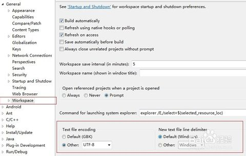首先要配置一个 tomcat server，具体步骤可百度之。要求 tomcat 版本>=6 即可。如果已经有 tomcat 配置到 Eclipse，则可以忽略。
在 Eclipse 中点击 【File】-->【New】-->【Dynamic Web Project】新建一个空的项目，然后【Next】完成。
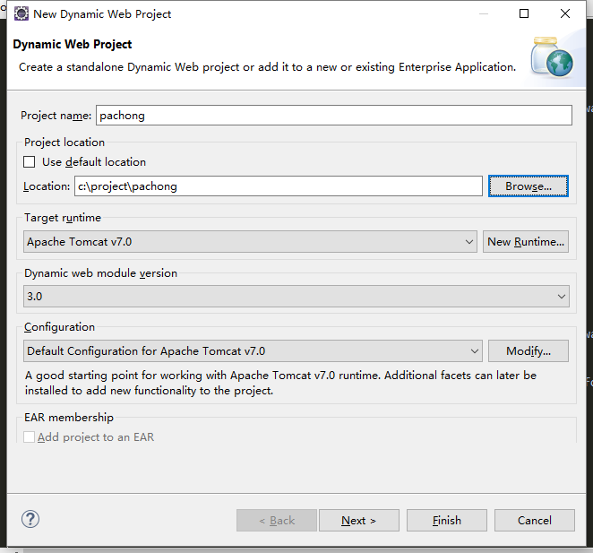然后在当前项目下执行下面 ant 脚本，创建 Web 项目的默认的目录。
<?xml version="1.0" encoding="UTF-8" ?> <!DOCTYPE html PUBLIC "-//W3C//DTD XHTML 1.0 Strict//EN" "http://www.w3.org/2002/xmlspec/dtd/2.10/xmlspec.dtd"> <project basedir="WebContent" name="HelloAnt"> <mkdir dir="bigfoot" description="js folder" /> <mkdir dir="WEB-INF/src" /> <mkdir dir="WEB-INF/tags" /> <mkdir dir="WEB-INF/jsp" /> <mkdir dir="asset/bigfoot" /> <mkdir dir="asset/less" /> <mkdir dir="asset/css" /> <mkdir dir="asset/images" /> <mkdir dir="images" /> </project>
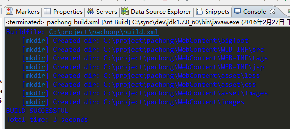
这样形成 WebContent 目录如下。
WebContent/
┗ asset/ ---->静态资源
┗ css/ ---->CSS
┗ images/ ---->UI 图片、ICON 图标
┗ less/ ---->less.js 预编译源码
┗ bigfoot/ ---->H5 框架公共库
┗ images/ ---->图片附件
┗ META-INF/ ---->浏览器不可见的目录，配置保存的目录
┗ logger/ ---->日志
┗ WEB-INF/ ---->浏览器不可见的目录
┗ src/ ---->Java 源码目录
┗ lib/ ---->JAR 包目录
┗ jsp/ ---->JSP 模板
┗ tags/ ---->JAR 包目录
关于目录的使用，声明如下。
点击 【Windows】-->【Perferences】，选择【Java】的【User Libraries】，然后点击【Import】导入我们提供的配置文件：\jar\my_user_library.userlibraries，这样 Eclipse 就有了用户库。
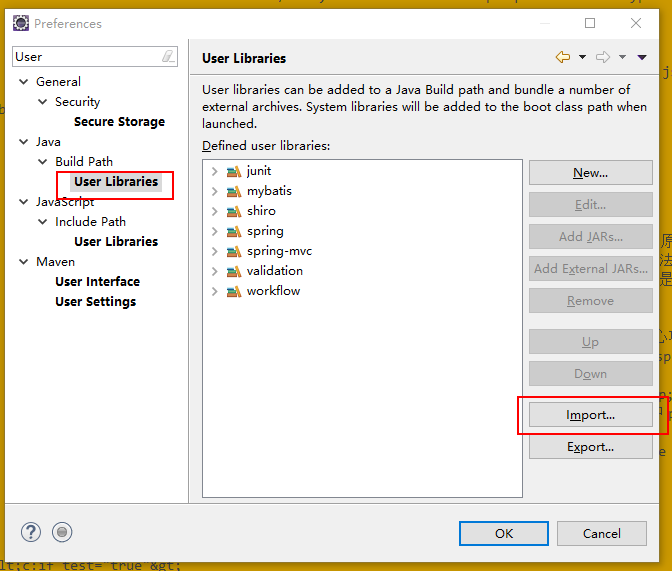
然后要让项目从 UserLibrary 中引入 JAR 包。右击左边【Project Exploer】项目名称，出现菜单选择【Build Path】-->【Configure Build Path...】,出现如下界面。
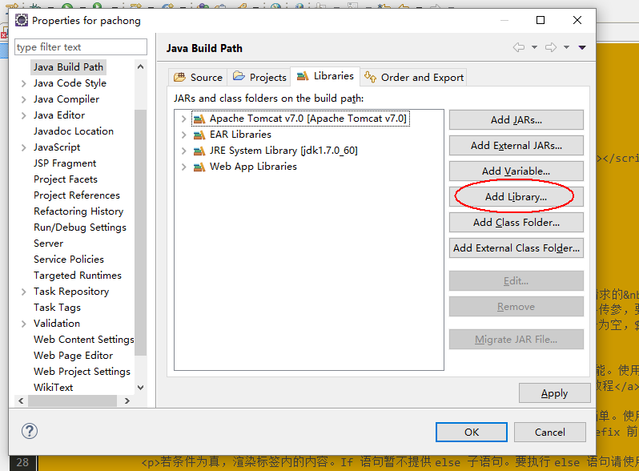
点击【Add Library...】，选择 【User Library】-->【Next】，把之前所有库都选上。
| 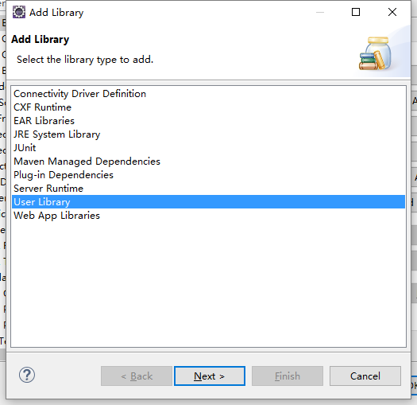 |
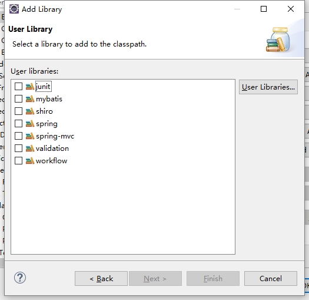 |
这还没有完，因为 WebappClassLoader 加载器专门负责加载 webapps 下面各个 web 项目的 WEB-INF 下的类库。而我们通过 User LLibrary 引入的 JAR 包自然不会被 WebappClassLoader 加载器加载，所以必然会报 ClassNotFoundException 。右击左边【Project Exploer】项目名称，出现菜单选择【Properties】-->【Deployment Assembly】,点击【Add...】，选择【Jav Build Path Entries】。然后多选那些库（提示：可按着 ctrl 键多选）。
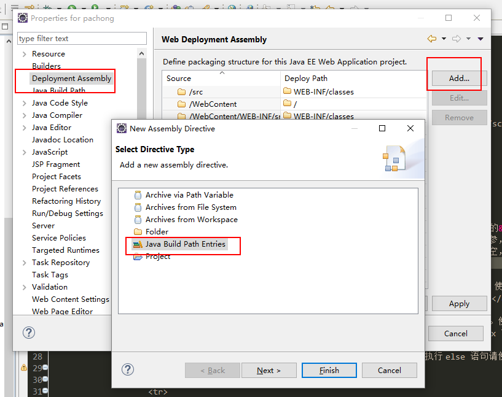最后完成！你可以看到 JAR 包已经分门别类地引入到项目中。
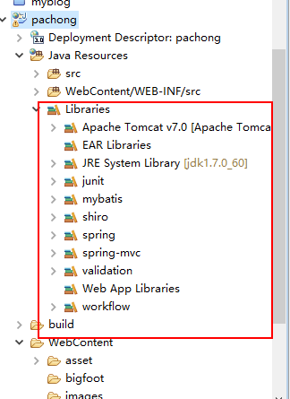
右击左边【Project Exploer】项目名称，出现菜单选择【Build Path】-->【Configure Build Path...】,选择第一个【Source】面板，点击【Link Source...】

接着是前端 ui 库的关联。按着 ctrl 键同时鼠标拖拽 /ui 目录到项目 /asset 下，松开出现下面对话框。
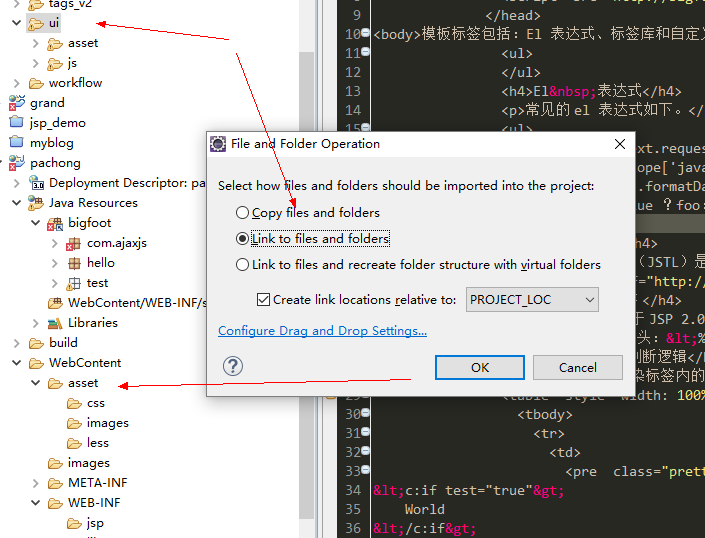
重命名为 bigfoot。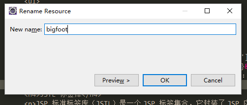
如法炮制，关联 jsp 模板为 WEB-INF/jsp/common 目录，关联 tag 标签为 WEB-INF/jsp/public 目录。
首先是忽略 *.svn。打包 jar 时会把多余的 *.svn 也打包进去。我们不希望这样，于是设置 Eclipse 忽略 *.svn。
Ignore SVN files when exporting a WAR file from Eclipse：Enter the project properties > Resource > Resource Filters > Add... > Exclude All > Files and Folders > All children (recursive) > Name matches *.svn > OK.

todo